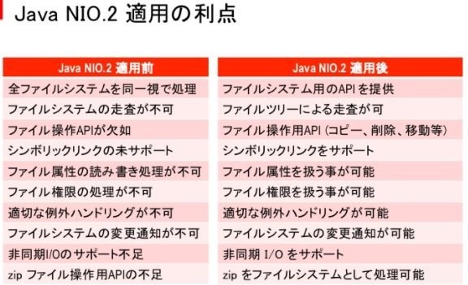

吉村 武志 (@takesi_yosimura)
吉村 武志
福岡周辺の勉強会に時々出没して、
たくさんTweetしたりしている人
Javaの勉強会やってますが、 仕事はClassic ASP & VB.Net
趣味は音ゲーとかアナログゲーム（ボードゲーム・TRPG）
標準I/O系ライブラリについて
| JDK 1.0 | java.io | 昔ながらの データストリームAPI |
| JDK 1.4 | java.nio | java.ioの補足機能のNIO |
| java.nio.channels | ||
| java.nio.charset | ||
| JDK 1.7 | java.nio.file | ファイル操作が 強化されたNIO2 |
| java.nio.file.attribute | ||
| java.nio.file.spi |
データ入出力、読み書き操作といえばjava.ioでした。
ファイル操作が貧弱で辛い。
String sourcePath = "/Users/tksy/work/Java8.jpeg";
String destPath = "/Users/tksy/work/Java8_copy.jpeg";
OutputStream out = null;
InputStream in = null;
try {
out = new BufferedOutputStream(new FileOutputStream(destPath));
try {
in = new BufferedInputStream(new FileInputStream(sourcePath));
byte[] buffer = new byte[256];
int size;
while ((size = in.read(buffer)) > 0) {
out.write(buffer, 0, size);
}
} finally {
if (in != null) {
try {
in.close();
} catch (IOException ignore) {
}
}
}
} catch (IOException ex) {
ex.printStackTrace();
} finally {
if (out != null) {
try {
out.close();
} catch (IOException ignore) {
}
}
}
わりとおぞましいコード。。。
それはともかく、java.ioで知っておきたいクラスを幾つか。
| InputStream | 入力系ストリームの抽象クラス System.in |
| FileInputStream | ファイルからの入力ストリーム |
| BufferedInputStream | バッファ機能付き |
| OutputStream | 出力系ストリームの抽象クラス |
| FileOutputStream | ファイルへの出力ストリーム |
| BufferedOutputStream | バッファ機能付き |
| PrintStream | データ値の出力ができる System.out |
| Reader | 文字ストリームの読み込み用 |
| InputStreamReader | InputStreamとの橋渡し用 |
| FileReader | 文字ファイルの読み込み用 |
| Writer | 文字ストリームの書き込み用 |
| OutputStreamWriter | OutputStreamとの橋渡し用 |
| FileWriter | 文字ファイルの書き込み用 |
最近は使わないかな？
| Serializable | クラスの直列化可能性のマーク |
| ObjectOutputStream | 直列化データの出力用 |
| ObjectInputStream | 直列化復元用 |
シリアライズデータの読み書き関連の話
New I/O(NIO)APIが追加されました。
でも、使ったことないです。。。
こんな機能がある模様。
| バッファ | NIOの他の機能で使う |
| チャネル | 入出力操作のための接続 |
| キャラクタセット | 文字コードの取り扱い用 |
すみません、試せてないです。
IO APIの改良APIです。
おおお、使えるならこれを使いたい。
NIO2はこの辺りが便利そう
| FileSystems | ファイル・システム用のファクトリ |
| FileSystem | 入出力操作のための接続 |
| Path | システムに依存するファイル・パスを表す |
| Files | 様々なファイル操作が可能 |
Filesで大抵のファイル操作できそう！